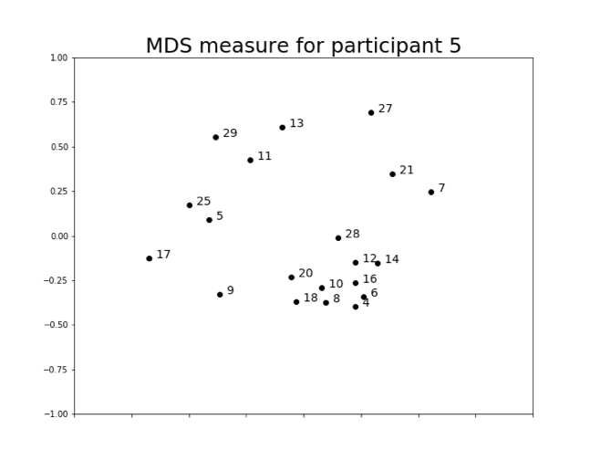
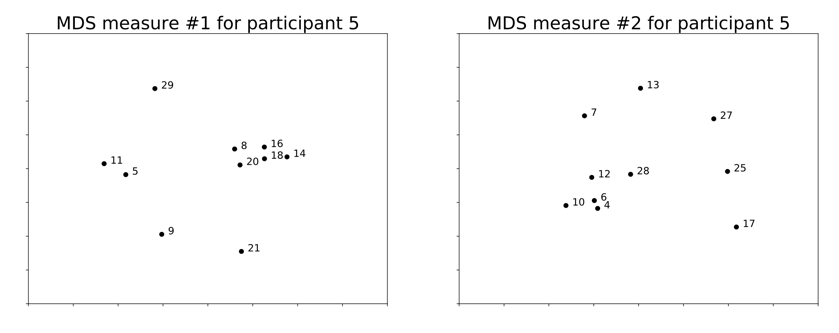
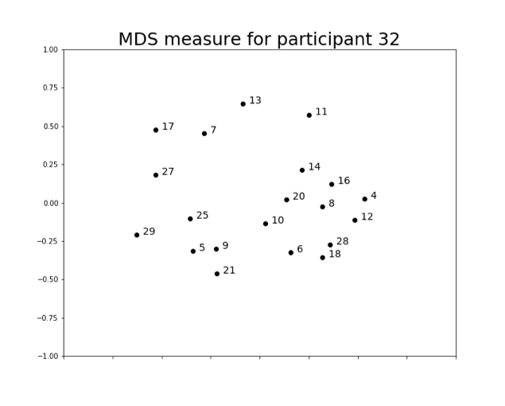
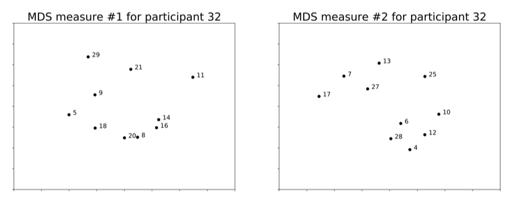
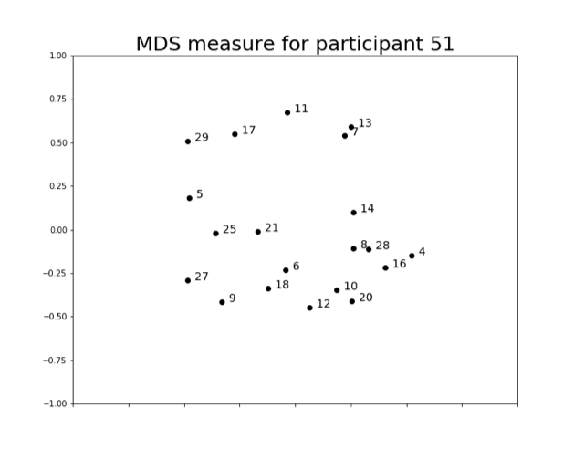
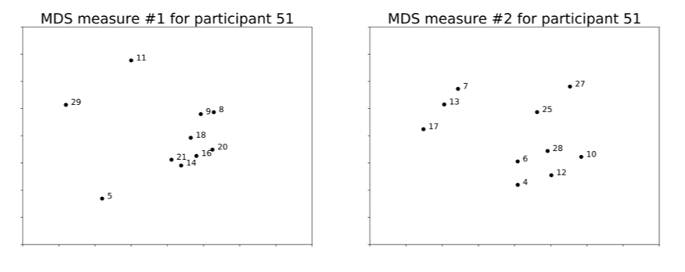
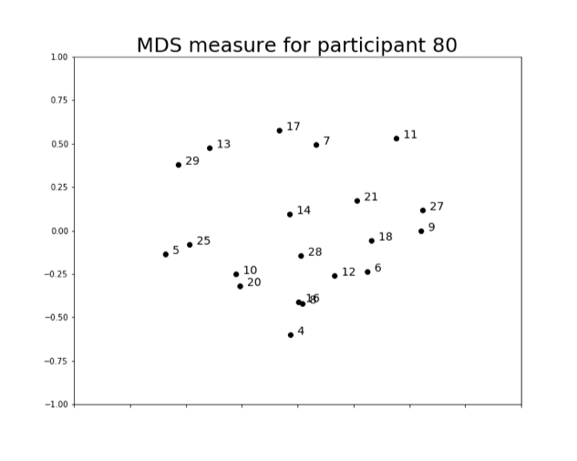
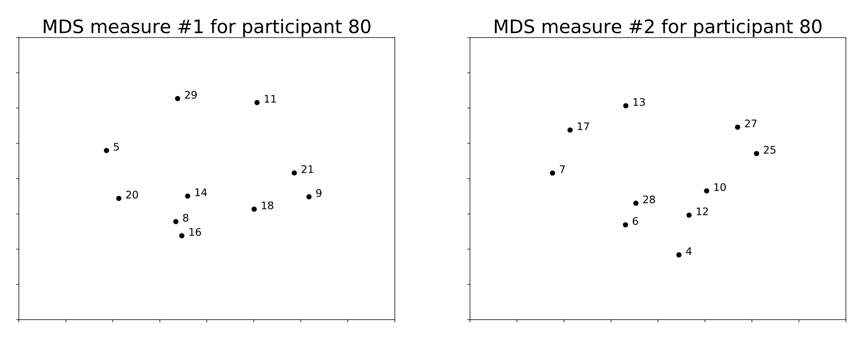

Results
1. Average Results of 84 Participants
We first ran MDS and ADCLUS2 on the average results of all 84 participants. We tested different numbers of clusters, and it seemed like 4 clusters gave the optimal clustering of numbers. From the results, it seems like both algorithms recognize that most of the clusters are based off of magnitude. There are clusters of “small” numbers (below 10), “medium” numbers (between 10 and 20), and “large” numbers (over 20), as well as a cluster of even numbers.
MDS Analysis of Average Results
ADCLUS2 Analysis of Average Results
4 clusters:
● 14, 16, 8, 18, 12, 28, 6, 4 (even)
● 29, 20, 21, 25, 28, 27 (>=20)
● 14, 16, 9, 11, 20, 18, 21, 12, 17, 13, 10 (>=10 <=20)
● 5, 9, 8, 7, 6, 4, 10 (<10)
2. Case Study Results
These are the MDS and ADCLUS2 results for participants who seemed to have significant clusterings of numbers based on their MDS plots.
(A) Participant 5
MDS Analysis of 20 Numbers*The bolded weight and list of numbers belong to the cluster with the highest weight, meaning it seemed to be the feature that the participant emphasized the most.
ADCLUS2 Analysis of 20 Numbers
Weights = 24.2764 56.5536 35.9281 23.7502 ● 5, 8, 20, 7, 25, 6
● 14, 16, 8, 20, 18, 12, 28, 6, 4, 10 (even)
● 14, 21, 7, 12
● 5, 9, 11, 12, 13, 10
MDS Analysis of Two Groups of 10 Numbers

ADCLUS2 Analysis of Group 1
Weights = 61.8217 64.4453 66.8217 20.5881
● 5, 11
● 14, 16, 8, 20, 18 (even)
● 5, 20 (multiples of 5)
● 9, 8, 20, 18, 21
ADCLUS2 Analysis of Group 2
Weights = 41.6386 29.1386 24.4404 65.5946
● 12, 13
● 7, 25, 28, 27
● 7, 12, 6
● 12, 28, 6, 4, 10 (even)
Here, we see that the algorithms seem detect significant clusters for even numbers, for both the set of 20 numbers and the two groups of 10 numbers.
(B) Participant 32
MDS Analysis of 20 Numbers
ADCLUS2 Analysis of 20 Numbers
Weights = 29.8831 41.3112 32.0941 40.8001
● 9, 21, 7, 25, 6, 13, 27
● 14, 16, 8, 20, 18, 12, 28, 6, 4, 10 (even)
● 5, 9, 8, 20, 25, 10
● 16, 8, 25
*11 and 17 are not in any clusters. As could be seen from the diagram, those numbers are distant from the rest.
MDS Analysis of Two Groups of 10 Numbers
ADCLUS2 Analysis of Group 1
Weights = 36.4607 37.2306 47.5376 51.3812
● 9, 29, 21
● 9, 8, 20, 21
● 5, 9, 18
● 14, 16, 18, 20, 18 (even)
ADCLUS2 Analysis of Group 2
Weights = 29.4314 34.0314 46.2419 31.0314
● 7, 25, 27, 10
● 7, 17, 27
● 12, 28, 6, 4, 10 (even)
● 25, 6, 13, 27
(C) Participant 51
MDS Analysis of 20 Numbers
ADCLUS2 Analysis of 20 Numbers
Weights = 26.0371 26.2686 17.2405 38.7405
● 14, 16, 9, 8, 20, 18, 21, 25, 12, 28, 6, 4, 27, 10
● 16, 8, 20, 18, 12, 28, 6, 4, 10
● 5, 14, 0, 18, 21, 7, 25, 12, 6, 27
● 5, 11, 7, 13 (prime)
MDS Analysis of Two Groups of 10 Numbers

ADCLUS2 Analysis of Group 1
Weights = 12.9116 23.6286 31.9450 26.7850
● 9, 8, 11, 18
● 16, 9, 8, 20, 18
● 14, 16, 8, 20, 18, 21
● 14, 9, 18, 21
ADCLUS2 Analysis of Group 2
Weights = 26.5000 74.9545 53.9545 26.5545
● 25, 12, 28, 6, 4, 27, 10
● 7, 13 (prime)
● 17, 13
● 12, 28, 6, 4, 10
Here, we see that overall for all 20 numbers, this participant’s data yielded a more significant cluster of prime numbers. When the numbers are broken apart into two groups, we see that in the first group, 5 and 11 don’t seem to form a cluster, but 7 and 13 from the second group form a heavily weighted cluster.
(D) Participant 80
MDS Analysis of 20 Numbers
*We used seven clusters for the analysis of this participant’s data, because this participant’s results had more features observed in the MDS plot.
ADCLUS2 Analysis of 20 NumbersWeights = 29.6526 48.1872 19.4657 71.0419 58.3805 35.8621 59.4179
● 16, 8, 20, 12, 4 (multiples of 4)
● 14, 16, 8, 20, 18, 12, 28, 6, 4, 10 (even numbers)
● 14, 16, 18, 21, 7, 28, 10
● 5, 20, 25, 10 (multiples of 5)
● 9, 18, 27, 21, 12, 6 (multiples of 3)
● 21, 7, 25, 28
● 14, 7, 17 (numbers related to 7)
MDS Analysis of Two Groups of 10 Numbers

ADCLUS2 Analysis of Group 1
Weights = 82.0266 64.8810 23.4562 65.5412
● 5, 20 (multiple of 5)
● 14, 16, 8, 20, 18 (even, multiples of 4)
● 14, 11, 18, 21
● 9, 18, 21
ADCLUS2 Analysis of Group 2
Weights = 47.1127 75.5277 37.2448 38.5719
● 25, 28, 10
● 7, 28 (multiple of 7)
● 12, 28, 6, 4, 10 (even, multiples of 4)
● 12, 28, 6, 27
Here, we see that while the analysis of all 20 numbers yields many significant clusters, the analyses of the two groups of 10 numbers do not seem to yield as many clusters. Group 1 and the set of 20 numbers both contain a significant cluster of multiples of 5, but Group 2 does not. Also, both Group 1 and Group 2 contain clusters of even numbers, but Group 1’s most signficant cluster contains multiples of 5, while Group 2’s contains multiples of 7.
Discussion and Conclusion
From our results, we can generally conclude that there was some consistency between the MDS and ADCLUS analyses of similariy data. Clusters that were apparent visually in the MDS plots were generally detected by the ADCLUS algorithm and given significant weights. Clusters that were apparent when analyzing all 20 numbers together were generally also detected when analyzing the two groups of 10 numbers. However, there were exceptions, such as the results of the data from Participant #80, in which clusters that were significant when aggregating the 20 numbers were lost when splitting the numbers apart into two groups. Nevertheless, the analyses from the 20 numbers were just frames of reference. The main point of the study was to examine whether there was consistency between the analyses of the two groups of numbers, based on the data of our control group. (Without any educational or cognitive interventions, there should be no difference in how participants judge the similarities between numbers of each group, so the clusters of the two groups should arguably be similar.) Regarding that aspect, the results were fairly positive; generally, the clusters significant in Group 1 also showed up in Group 2, although there were still exceptions.
These issues of discrepancies between clustering analyses of different groups may have been alleviated if there were more numbers being compared in the study, but that would lead to an exorbitant number of comparisons between numbers that participants would have to make (with only 20 numbers, there were already 190 comparisons to be made). Nevertheless, the relatively small quantity of numbers we included in our study was a limitation to our analysis.
However, we do believe the overall results are positive enough for us to use both MDS and ADCLUS to assist our analyses of future studies. We plan to design studies in which a group of participants rates similarities between a group of 10 numbers, undergoes a certain intervention pertaining to mathematics (such as a lesson, a problem-solving task, or an activity), and rates a different set of 10 numbers (with roughly the same numerical features as those of the first group). Our analyses from the data of these future studies hopefully shed light on how certain interventions affect how one perceives relationships between numbers.